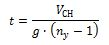

УДК 621.45
СИСТЕМА СПАСЕНИЯ РАКЕТНЫХ ДВИГАТЕЛЕЙ
Кандидаты техн. наук А.Е. Милов, В.В. Ткач
Тезисы
|
Рассмотрены способы спасения ЖРД первой ступени
ракет-носителей космического назначения с целью
его многократного использования.
Предложена схема спасения ЖРД, отличающаяся от
прототипов. Показано, что предлагаемый способ минимизирует потери массы выводимого полезного груза.
Приведены схемные решения систем спасения ракетных двигателей семейства РД170.
|
Ключевые слова:
многоразовый ракетный ускоритель; система спасения; капсула; ракетный двигатель.
к выводам и списку литературы
Введение
Наиболее ценным элементом РН космического назначения является ЖРД первой ступени. Он определяет надежность и основные характеристики РН. На ЖРД приходятся максимальные трудозатраты, связанные с его разработкой, изготовлением, сопровождением, контролем и испытанием, а также потребление ресурсов. Большой цикл изготовления ЖРД делает его наиболее дефицитным элементом РН. Поэтому основной способ решения задачи снижения стоимости РН и сроков подготовки её к пуску заключается в многократном использовании ЖРД первой ступени.
Известно несколько способов спасения элементов РН с целью их многократного использования. Первый из них основан на концепции многоразового ракетного ускорителя (МРУ) и подразумевает спасение всей ступени, включающей как ракетные двигатели, так и топливные баки. Этот способ может быть осуществлен по нескольким схемам, среди которых управляемый спуск с самолетной посадкой МРУ с использованием множества вспомогательных элементов, таких как: выдвижное крыло, хвостовое оперение, шасси, маршевый ВРД, тормозной парашют и многое другое - проект "Байкал" [1]. По другой схеме МРУ спасается с помощью парашютов, с последующим торможением двигателями мягкой посадки (ДМП), таких как РДТТ [2], либо "подцепкой" летательным аппаратом на траектории спуска. Известна также схема, в которой торможение МРУ осуществляется маршевыми ракетными двигателями с последующей вертикальной посадкой на твердую поверхность [3].
Ввиду того, что в обозначенных схемах подразумевается спасение ракетного двигателя вместе с топливными баками, системы спасения таких схем технически сложны и имеют значительную массу. Это, в свою очередь, приводит к уменьшению массы выводимого полезного груза (ПГ) и увеличивает сроки окупаемости системы.
Например, МРУ "Байкал" снижает массу выводимого полезного груза РН "Ангара" в два раза, и по самым оптимистичным оценкам окупаемость проекта будет достигнута при более чем 25-ти кратном применении, см. табл. 1, взято из [4].
| Характеристика | Ангра 1.2 | МРУ Байкал-Ангара |
| Масса ПГ, тонн | 3.8 | 1.9 |
| Сухая масса 1-ой ст., тонн | 10 | 20.1* |
| Число применений 1-ой ст. | 1 | 25-50 |
| * - к массе конструкции добавлена масса топлива (≈3т), необходимого для функционирования ВРД |
Технически более простым является второй способ, описанный в [5 - 7] и заключающийся в спасении только ракетного двигателя.
Имея свои особенности данная система спасения имеет меньший вес, чем система спасения в схемах с МРУ. В связи с этим проигрыш в массе выводимого полезного груза, по отношению к РН однократного применения - наименьший (расчёты представлены далее), а стоимость отработки системы спасения и сроки окупаемости - минимальны.
Предлагаемая система спасения ракетных двигателей основана на данном способе.
Назначение и конструкция системы спасения
Система спасения предназначена для защиты ракетного двигателя от загрязнений и повреждений, причиной которых могут служить нагрузки, действующие на двигатель после отделения от РН во время аэродинамического торможения в атмосфере, при приземлении или приводнении.
Для решения этих задач ракетный двигатель помещается в капсулу, с открытой стороны которой, выходит сопловая часть ракетного двигателя. Остальные агрегаты двигателя закрыты кожухом капсулы. Во время спуска капсула сориентирована теплозащитным днищем. Ориентация осуществляется с помощью сверхзвукового стабилизирующего парашюта. В капсуле находятся отсеки системы торможения, включающей в себя основные парашюты и посадочное устройство. В качестве последнего, в случае приземления на твердую поверхность, используются двигатели мягкой посадки (ДМП) или пневмоподушка, в случае приводнения - надувной плот, рис. 1.
 |
| Рис. 1. Схема спасения ЖРД первой ступени РН легкого класса типа "Ангара": |
- старт РН;
- отделение первой ступени;
- выпуск стабилизирующего сверхзвукового парашюта;
- отделение капсулы от топливного бака;
- спуск на стабилизирующем парашюте;
- спуск на основном парашюте;
- инициализация посадочного устройства (плот для приводнения либо пневмоподушка, или ДМП для приземления);
- посадка;
|
На рис. 2 и 3 показана конструкция системы спасения двигателя первой ступени РН лёгкого класса "Ангара" (двигатель РД191).
В этой схеме капсула выполнена в виде усеченного конуса, состоящего из периферийного кожуха, донной защиты, которые являются частью конструкции РН и теплозащитного экрана. Донная защита включает в себя гибкий кожух, предохраняющий агрегаты двигателя от внешних загрязнений, и не препятствует качанию камеры двигателя. Отсек посадочного устройства системы торможения находится в днище капсулы. Отсек закрыт теплозащитным экраном. Крепление капсулы к РН осуществлено через силовую раму двигателя. Магистрали подвода компонентов топлива проходят через отсек посадочного устройства (рис. 4) хотя подвод компонентов топлива по магистралям, проходящим через периферийный кожух, также возможен.
Связи двигателя с РН - разделяющиеся и осуществлены любым известным способом, включая пироболты.
Данная конструкция системы спасения отличается от прототипов тем, что конструктивно более проста, так как не требует обеспечения полной герметичности двигательного отсека, избыточной прочности капсулы, не содержит механизмы, специальных средств управления, навигации, маневрирования и включает в себя только "готовые решения", такие как парашюты и посадочное устройство.
|
| Рис. 2. Конфигурация системы спасения ракетного двигателя в составе РН лёгкого класса "Ангара": |
- сопло ракетного двигателя;
- периферийный кожух капсулы;
- крышка парашютного отсека;
- крышка отсека посадочного устройства, она же является тепловой защитой;
- трубопроводы подвода топлива;
- топливный бак первой ступени РН (условно полупрозрачен);
- кронштейн крепления капсулы к ракете;
- пироболт;
|
Схемы конструкций систем спасения многокамерных ракетных двигателей, таких как РД171М и РД180, приведены на рис. 5 и 6. В качестве посадочного устройства, смягчающего удар при контакте с поверхностью Земли, в них могут быть использованы любые указанные выше способы.
Вносимые в конструкцию РН дополнительные элементы системы спасения повлияют на массу выводимого ПГ. Оценим массу основных элементов системы спасения: тормозной системы и тепловой защиты, а также потерю массы ПГ на примере РН легкого класса "Ангара 1.2".
 |
| Рис. 3. Состав системы спасения: |
- ракетный двигатель;
- узлы крепления парашютных канатов;
- парашютный отсек;
- силовые детали парашютной подвески;
- силовая рама двигателя;
- кронштейн крепления к ракете;
- парашютный канат;
- периферийный кожух капсулы ракеты (условно полупрозрачен);
- отсечные клапаны;
- пироболт;
- топливный бак первой ступени;
- отсек посадочного устройства;
|
|
| Рис. 4. Отсек посадочного устройства (а - плот или пневмоподушка, б - ДМП): |
- крышка отсека посадочного устройства, теплозащитный экран;
- трубопроводы подвода компонентов топлива;
- упаковка с посадочным устройством;
- крепежные стропы;
- отсечные клапаны;
- двигатели мягкой посадки (РДТТ);
|
|
| Рис. 5. Система спасения двигателя РД171М в составе РН “Зенит”: |
- сопло двигателя;
- периферийный кожух капсулы (условно полупрозрачен);
- парашютный отсек;
- отсек посадочного устройства, закрытый теплозащитным покрытием (условно полупрозрачен);
- магистрали подвода компонентов топлива;
- кронштейн крепления к ракете;
- топливный бак РН;
|
|
| Рис. 6. Система спасения двигателя РД180 в составе РН “Atlas”: |
- сопло двигателя;
- периферийный кожух капсулы (условно полупрозрачен);
- парашютный отсек;
- отсек посадочного устройства, закрытый теплозащитным покрытием (условно полупрозрачен);
- трубопровод подвода топлива;
- топливный бак первой ступени;
- кронштейн крепления к ракете;
|
Расчёт массы тормозной системы
Массу тормозной системы, включающую в себя основной парашют и ДМП (РДТТ), определим по методике [8]. Высота включения ДМП:
где: VСН - скорость снижения капсулы; ny - допустимая перегрузка; g - ускорение свободного падения.
Время работы ДМП:

Необходимая масса топлива ДМП:
где: M - масса спасаемого двигателя; I - удельный импульс ДМП; β - угол установки ДМП (принят равным 00).
Масса тормозной системы, как сумма масс основного парашюта (из экспериментальной зависимости для парашютов с малой удельной нагрузкой) и ДМП:

где: a - коэффициент конструкции ДМП (принят равным 2).
Оптимальная скорость снижения капсулы на основном парашюте:
Оптимальная (минимальная) масса тормозной системы:
Исходные данные и результаты расчета приведены в табл. 2 и на рис. 7. Также, для справки, приведены массы тормозных систем двигателей РД180 и РД171М.
Как видно из расчета, масса тормозной системы составляет 8,5% от массы спасаемого двигателя, а оптимальная (минимальная) масса тормозной системы составляет 5,5%, при оптимальной скорости снижения на основном парашюте 26,6м/с.
| Параметр | Двигатели |
|---|
| РД191 | РД180 | РД1171М |
| М, тон | 2,29 | 5,48 | 9,3 |
| VСН, м/с | 10 |
| ny,g | 5 |
| I,сек | 250 |
| β, град. | 0 |
| Ht, м | 1,27 |
| t, сек | 0,25 |
| mТ, тонн | 0,012 | 0,028 | 0,047 |
| MТС, тонн | 0,188 | 0,450 | 0,764 |
| VСНopt , м/с | 26,6 | 26,6 | 26,6 |
| MТСopt , тонн | 0,125 | 0,300 | 0,510 |
|
| Рис. 7. Масса тормозной системы двигателей семейства РД170: |
|
█ – масса при расчетной скорости снижения; █ – минимальная масса при оптимальной скорости снижения;
|
Расчёт массы тепловой защиты
Величина нагрева и допустимая толщина экрана тепловой защиты оценивались исходя из следующих начальных условий:
- масса капсулы M=2500кг (двигатель РД191 и система торможения);
- скорость отделения от РН V=2,7км/с [9];
- высота верхней точки траектории H=100км;
- коэффициент лобового сопротивления капсулы Cx=2;
- площадь поперечного сечения капсулы S=7м2 (соответствует диаметру 3м);
- начальный угол между вектором скорости и горизонтом θ=00;
Зависимость высоты и скорости от времени при спуске рассчитаны по вычислительной программе [10], рис. 8.
|
| Рис. 8. Зависимость высоты H и скорости V от времени t при спуске. |
Для упрощения вычислений принимается, что теплозащитный экран представляет собой полусферическую оболочку. Для расчета теплового потока на лобовую поверхность сферы использована формула Мурзинова [11]
где - суммарный тепловой поток на поверхность теплозащитного экрана, кВт; - площадь поперечного сечения капсулы, м2; ρ, ρ0, - плотность атмосферы на расчетной и нулевой высотах, кг/м3 (берется из таблицы стандартной атмосферы ГОСТ 4401-81 [12]); - радиус сферы, м; - скорость, м/с.
Результаты расчета представлены на рис. 9.
Суммарное количество теплоты (площадь под кривой) - ΣQ=23469кДж.
Температура, на которую нагреется теплозащитная оболочка при условии равномерности и адиабатности подвода теплоты, равна:
где C - теплоемкость оболочки.
Для полусферической оболочки диаметром 3м и толщиной 1мм из стали 12Х18Н10Т: масса 112кг; теплоемкость 56кДж/0С, температура нагрева - 4190С.
Таким образом, при спуске с некосмическими скоростями теплозащитный экран может быть изготовлен из неэкзотического материала, например, типа нержавеющей стали (диапазон рабочих температур от минус 1960С до +6000С).
Расчёт потери массы ПГ
Расчет проведен для двухступенчатой РН лёгкого класса "Ангара 1.2" в вариантах с МРУ "Байкал" и капсулой системы спасения ЖРД первой ступени. Для последнего случая вес системы спасения, включающей в себя основной парашют, ДМП и теплозащитный экран, составляет 300кг.
Массовые характеристики ступеней определим по преобразованной формуле Циолковского, связывающей начальную массу ракеты с её конечной массой при заданных значениях конечной скорости ракеты и удельного импульса двигателя [13]:
где MТ - масса топлива; MК - масса конструкции; MПГ - масса полезного груза; k - коэффициент конструкции (принят равным 9); V - характеристическая скорость, с учетом потерь из-за гравитации (принято: для первой ступени V=3000м/с; для второй ступени V=6000м/с); I - удельный импульс двигателя (принято: для первой ступени I=3100м/с; для второй ступени I=3300м/с). Масса MПГ для первой ступени равна массе MСТ второй ступени. В свою очередь, MСТ=MТ+MК+MПГ.
Результаты вычислений сведены в табл. 3.
| Ангара 1.2 | МРУ Байкал-Ангара | Ангара 1.2 с ситемой спасения ЖРД 1ст |
| Ступень | 1ст | 2ст | 1ст | 2ст | 1ст | 2ст |
| MПГ, тонн | 49,1 | 3,80 | 48,2 | 1,90 | 49,1 | 3,70 |
| MТ, тонн | 105,4 | 44,2 | 99,8 | 43,4 | 105,2 | 44,20 |
| MК, тонн | 11,7 | 4,9 | 20,1 | 4,80 | 12, | 4,9 |
| MСТ, тонн | 117,1 | 49,1 | 119,9 | 48,20 | 117,2 | 49,10 |
| MРН, тонн 170 |
Как видно из таблицы, увеличение сухой массы первой ступени РН "Ангара" за счёт вспомогательных элементов МРУ "Байкал" на 72% приводит к уменьшению массы выводимого ПГ в два раза. Увеличение же сухой массы первой ступени РН "Ангара" за счет системы спасения ЖРД первой ступени на 2,5% уменьшает массу ПГ на 2,6% (100кг).
Выводы
- Описана система спасения ракетных двигателей первых ступеней РН космического назначения, отличающаяся от известных решений конструктивной простотой и минимальной массой. Способ спасения защищен патентом RU 142 981 U1 - "Система спасения ракетных двигателей" (опубликован 10.07.2014 Бюл. №19, заявка 2013152622/11 от 27.11.2013) и имеет международное право приоритета (заявка PCT/RU №2013/001071 от 28.11.2013) как обладающий новизной, изобретательским уровнем и промышленной применимостью.
- На примере двигателя РД191 проведен расчет массы системы спасения и оценены потери массы ПГ выводимого РН лёгкого класса. Показано, что увеличение сухой массы первой ступени РН "Ангара" 1.2 на 300кг (2,5%) за счет массы конструкции системы спасения приводит к снижению массы ПГ на 100кг (2,6%).
- Представлены конструктивные схемы систем спасения двигателей РД180 и РД171М а также рассчитаны массы их тормозных систем.
Литература
- Патент РФ №2492123, Многоразовый ускоритель первой ступени ракеты-носителя на базе унифицированного ракетного блока. // Мамин В.В., Корнакова Л.В. и др., ФГУП "ГКНПЦ им. М.В. Хруничева".
- Патент US 6158693A, Recoverable booster stage and recovery method. // George E. Mueller, Henry O. Pohl, 1998.
- Патент РФ №2318704, Ракета космического назначения тандемной схемы с многоразовой первой ступенью. // Дегтярь В.Г., Данилкин В.А. и др., ФГУП "ГРЦ "КБ им. акад. В.П. Макеева".
- "Байкал", покоривший Париж., Новости космонавтики №8, 2001г.
- Патент US 4830314, Recovery system for rocket engine. // Hujsak Edward J., 1989.
- Патент US 4796839A, Space launch vehicle. // Hubert P. Davis, 1989.
- Mari Gravlee, Frank Zegler и др., EELV Partially Reusable Booster., AIAA 2010-8907.
- Стасевич Р.А., Основы проектирования и расчёта грузовых парашютных систем. // Учебное пособие. Ленинград: ЛВИКА им. А.Ф. Можайского, 1969.
- Антоненко С.В., Белавский С.А., Комплекс средств обеспечения многократного использования ускорителей первой ступени семейства РН "Ангара". // Материалы Научных чтений памяти Циолковского К.Э., г. Калуга, 2002г.
- Раков Д. Л. LANE 1.17 Beta - программа для расчета баллистики летательных аппаратов (www.rakov.de).
- Глазунов А. А., и др. Аэродинамический нагрев топливных баков космического разгонного блока при спуске в атмосфере. Вестник Томского государственного университета № 4(16). с .79-95. 2011 г.
- Ярошевский В. А., Вход в атмосферу космических летательных аппаратов. - М.: Наука, 1988. - 336 с.
- Феодосьев В., Синярев Г., Введение в ракетную технику. 2 - изд., перераб. и дополн. // Оборонгиз, М.: 1961.
вернуться в начало